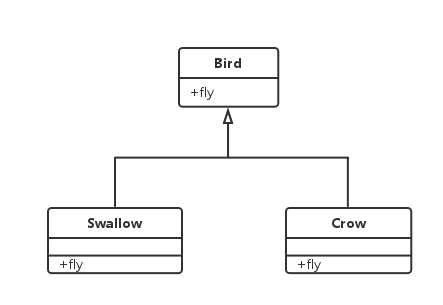
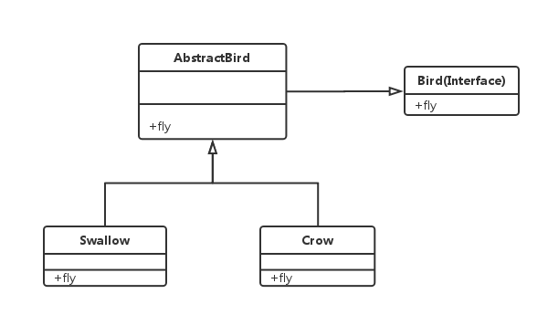

看了Effective Java的第十八条接口优先抽象类，其中对抽象类与接口的区别，以及为什么接口优先于抽象类做了比较深入的说明。
这里我学习到了一个对我来说新的概念，可能有很多人用过，但是不知道它原来是有这么一个说法。它就是今天的主角：AbstractInterface，在Effective Java中也叫它Skeletal Implementation(骨架实现)。
我们都知道接口与抽象类的区别之一，就是接口只能定义方法，而抽象类不但可以定义方法，还可以包含具体的实现。那假如说我又想使用接口，又想让它有一个公用的实现，怎么整呢？这时候就到AbstractInterface闪亮全场了。
现在假设是这种情况，有一个接口叫做Bird，它定义了一个方法fly。1
2
3public interface Bird {
void fly();
}
现在来了燕子（Swallow），燕子嘛，本来就是鸟，这里让它实现Bird这个接口。1
2
3
4
5
6public class Swallow implements Bird {
public void fly() {
System.out.println("I'm a bird, fly with two wings");
}
}
后来又来了乌鸦（Crow），同理让它实现Bird接口1
2
3
4
5
6public class Crow implements Bird {
public void fly() {
System.out.println("I'm a bird, fly with two wings");
}
}
结构为：

可以发现，它们实现的内容是完全一样的，我就姑且认为所有鸟的fly方法都是一样的吧，如果每种鸟都是用实现Bird接口的方式，这是相当不好，万一哪天鸟类集体进化了，有3个翅膀来飞了，修改所有鸟的fly方法可不是一件轻松的事。
终于主角要登场了，是的，我们可以加入抽象类AbstractBird，让它实现Bird接口，并且为所有鸟类提供一个公用的fly方法。现在的结构就变成了这样

这个AbstractBird就是一个骨架实现。
首先要强调一点是，骨架实现类是为了继承的目的而设计的，
那么这样做有什么好处？
- 因为使用的骨架实现，子类共有的方法可以由基类简单实现；
- 假如有一天
Bird接口变更了，所有鸟类都掌握了一项新技能：悬停。我们可以不用为所有鸟类都加上这个方法，只需要让AbstractBird实现这个方法，其子类自然也就有了这个功能了。也就是说它可以在一定程度上减少接口变更带来的影响。